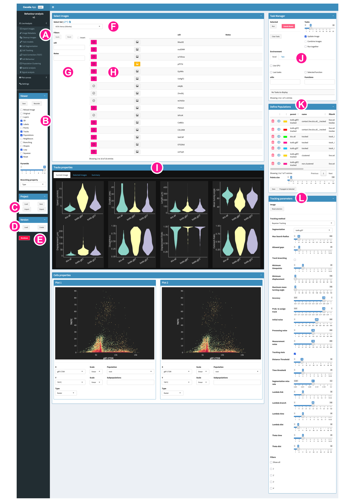
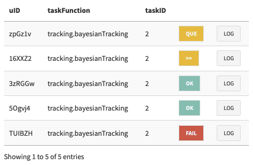

Overview¶
This is an overview for the basic usage of Cecelia. This is intended to give a brief reference. For more detailed and specific instructions please refer to Tutorial. We will first look at the Shiny interface and then at the napari interface. Most functions will be controlled over the Shiny app, such as processing images and which information will be shown in the image viewer. Within napari, you can mostly adjust the visual settings of the image and the data associated with the shown image.
Shiny app¶
{kind=link}
Processing workflowThe user is guided through individual processing steps. Every image needs to be imported as OME-ZARR. Once imported, the Metadata, that is, channel names, experimental information and other information for the individual images can be added. After that, most images will need some sort of cleanup function where the signal is corrected for autofluorescence, overspill or tissue drift. These corrected images can then be segmented. The user then must define populations based on the labelled objects. For static imaging, populations can be defined by manual gating or cell clustering. For live imaging, cells must be tracked and the user has the possibility to refine the populations by behaviour or spatial interactions.Plot canvasenables various plotting functions for the extracted populations, including frequency comparison, gating strategies, UMAPs and heatmaps. InSettings, the project ID is displayed and various options regarding High Performance Computing can be configured. Currently, this section is only for specialised users who require HPC access.Viewercontains various options how napari is openig images and which information is shown on the image.
Save: saves the current settings in the image viewer regarding channel intensities and colours. It does NOT save the information of any other layer at the moment.
Recorder: adds a recording plugin to the right of the viewer. This is not only helpful for timecourse images but also for any other kind of image where animation of some sort is required. The user must define the individual checkpoints for each animation by clicking Capture. Then, the animation can be saved with Save animation.
Reload image: reloads the image even if the currently selected one is selected again. This is helpful when applying a cleanup method and reload the image to show the results. If this is not ticked, the image layers of the currently shown image will not be updated.
Original: shows the original/raw image.
Layers: makes all channels of the image visible. If an image has a large number of channels, then it might not be helpful to show all channels at the same time. In this case, we can untick this option and the user has to toggle the individual channels themselves.
3D: shows the image in 3D. Otherwise, the default will be a 2D image with a z-slider.
Labels: shows the segmented labels of the image.
Points: shows the centre points extracted from the segmentation labels.
Tracks: shows the cell tracks for live images.
Populations: shows the populations defined by gating, clustering, tracking or other spatial properties.
Neighbours: shows neighbours for static images defined by neighbourhood detection.
Branching: shows branching network based on create branching.
Shapes: shows shapes previously defined in napari.
Lazy: loads the image as Dask rather than Zarr. This enables reading on demand which is required for larger images or if your system does not have enough RAM for the whole image. If this mode is too slow for you while viewing the image, you can untick this option. The whole image will then be loaded into memory, which might take some time, but vieweing should be faster.
Squeeze: This is a specialised option that you can ignore.
Reset: napari is reset when loading an image. This option is useful when comparing the results of cleanup functions to the original image. In that case you can load the currently corrected image. Then, untick Reset. Tick Reload Image. Tick Original and click on the image again. This will load the original image into the current viewer to compare thr cleanup procedure to the original image.
Pyramids: number of pyramid scales to be loaded. At the moment, napari will load the lowest resolution for 3D display. This means, if you have pryamid images, the resolution will be lower in 3D. If you want to screenshot images in 3D, then you might want to consider setting this scale to 1 which will effectively disable pyramid usage when loading the image.
Branching property: type of branching measurement shown after creating branching.
Projectcontains functions to manage project loading and saving.
Load: shows a table with all projects that can be loaded or deleted.
Save: saves the current project.
Import: imports a project from an archived file.
Export: exports the current project to an archived file.
Versioncontains functions to manage project versions. Each project can have multiple versions. At the moment, these individual versions are simple copies of the previous version except for the image data. Depending on the project, this might lead to a significant duplication of data.
Load: shows a table of the versions for the current project which can be loaded or deleted.
Create: creates a new version of the current project.
Shutdownthe app. After that you can close the console window.
The basic page layout is the same for all module pages in the app. Every images is part of experimental sets, which could be images with the same staining combination or from the same experimental setup.
Select Setwill select the current working set and update the images accordingly. Some functions, such as cell clustering or behaviour extraction will be run on selected images from the same set but NOT different sets.Filterswill filter the shown images based on the image metadata. This is helpful when processing images together that come from the same treatment or experimental condition. These can be defined in the metadata step.Imagesdisplays the images from the current set.
Tickboxes are used to select images to for processing. They turn pink when an image is selected. You can select multiple images which can be processed individually in batch or together depending on the module function used.
Image icons are used to open images. They turn yellow when an image is selected.
uID is the unique ID of the images. Every image has an ID which is unique within the project.
Module outputwill display data for the current image or the currently selected images depending on the module.
Task Manageris used to processed images with a certain function or workflow.

Run will run the selected function on the selected images.
Cancel shown will cancel all tasks that are currently shown in the task list.
Clear Tasks will clear all tasks from the task list that are currently not running.
Tasks defines the number of tasks that are run in parallel.
Update Image updates the image that is currently shown when the task finishes successfully
Combine Images runs selected images together as one experimental set. This is required for some processes such as cell clustering or behaviour extraction.
Run together runs images one-by-one in the same process.
local or HPC runs the task on the local machine or the HPC environment if configured
Use GPU utilises the GPU for certain tasks. This is mainly required for Cellpose segmentation and denoising.
Last tasks will display only the latest task for each image in the task list.
Selected function will only display tasks from the selected function.
The task list can be filtered for uID and task function.
Running Tasks are yellow with
>>. You can check theLOGbut there won’t be a progress bar. Queued tasks are yellow withQUE. Successful tasks are green withOK. Failed tasks are red withFAIL.
{kind=link}
Define Populationsis used to display the resulting populations. During Histocytometry gating you can rename these populations. Some of these are filtered which means that they are defined by some measure calculated from a module function, for example, contact between cell types based on distance.
Point size defines the size of the points on the napari viewer
Save will save the defined populations to disk and napari will show them. This is more of a helper button and should happen automatically. If you find your populations are not shown on the image, then try to save them here.
Propagate to Selected will propagate the population definitions from the current image to the other selected images. This is useful to define common colours across images or propagate cell cluster and gating definitions.
Function parametersare dependent on the selected function.
Napari viewer¶

Layer controlsdepends on the selected layer. Please refer to this brief introduction to napari layers if you are new to this image viewer.Layer listwill be added according to the options you selected in Shiny in B. These update automatically when you process images and have Update Image in J ticked.Image viewerfor detailed overview how to use the viewer refer to this introduction on napari viewer functionality.